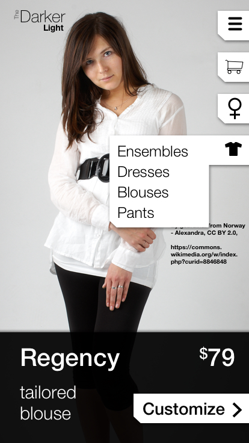
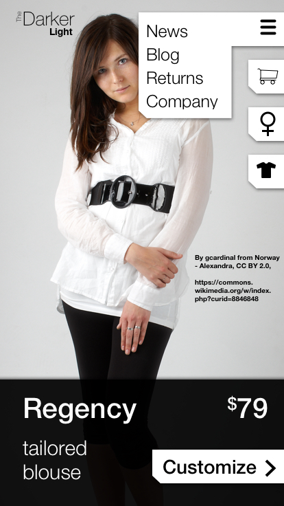
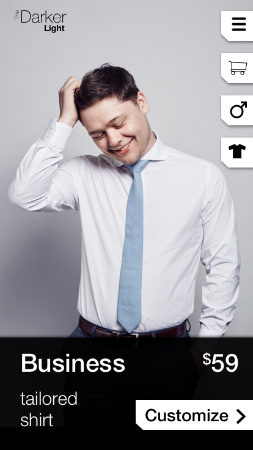
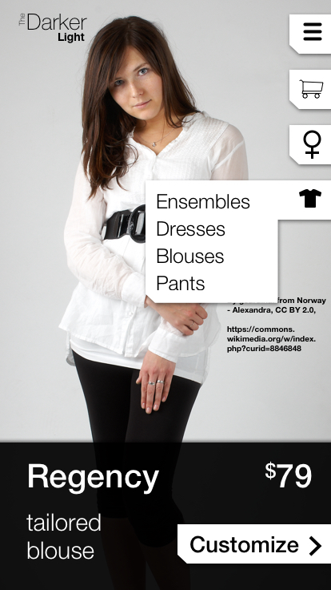
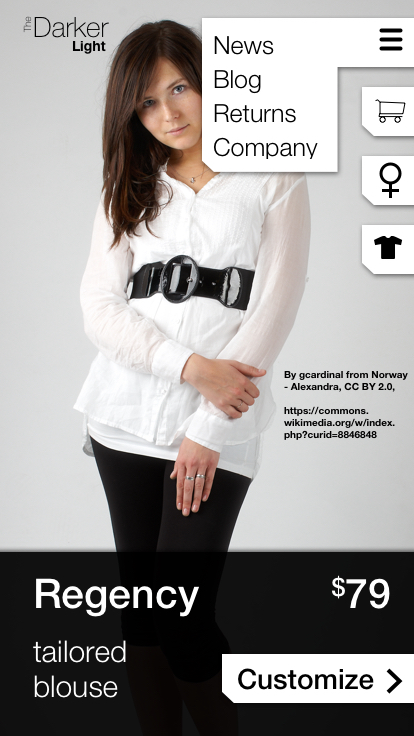
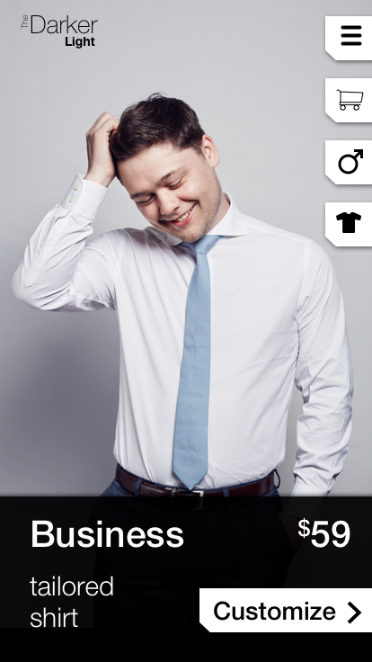

Renders are located at the end of the page.
Last year I was applying for a job in which the job
description specified, "MUST HAVE EXPERIENCE DESIGNING
E-COMMERCE APPS!!!" Like, it was 2017. Honestly, what self
respecting designer doesn't have experience designing
for e-commerce?
Well, me.
Hence my challenge: Design the best, most thematically
driven e-commerce app the world has ever seen. I wanted it
to have a specific theme out of which I could draw a whole
design scheme. I decided to do the whole site around an
extremely high-contrast black and white color scheme.
With that in mind I wanted to really reduce a shopping
experience to the basics. So what does that mean? Well,
first we have to have a way to find what you're looking for.
A search function helps with that, but it probably shouldn't
be the primary approach. We'll need to have a list of
merchandise. We'll need a way of differentiating between
men's and women's clothes. Given the fashion-heavy theme for
the site, I thought it would be appropriate to add a system
for measurement customization. And of course we'll need a
cart and we'll need a checkout. We'll also need some method
for navigating to the more mundane aspects of our business'
information such as "careers" and "return policies" and whatnot.
Research indicates a common thread (pun intended) in online
shopping layouts is a simple vertical list. Kohls, Target, eBay,
Amazon - all of them use the simple vertical list. But once you've
arrived, what if you're looking for something other than the categories
immediately displayed? Well, most of the time you have either to
search for what you want or use a filter checkbox, sometimes both.
So I decided to try experimenting with a different sort of
interaction for the main function, instead drawing more from the
layout of Netflix, with a primary vertical column of side-scrolling
carousels. From that point it seemed a simple enough journey, first
through a product-detail page wherein a user would select sizes,
read reviews, and place an order into the cart, through to the
cart view itself, and then finally on to checkout. The navigation
for the primary function of placing an order should be fairly
linear, with the option to circle back around to the start from
the cart to continue shopping. For navigation to all of the
secondary elements of the business I decided to opt of the
simplicity of a hamburger menu.
Here are my wireframes:
I concluded this project with a low-fi prototype.
I built this prototype app wholly in Adobe XD. Please check out
the interactive prototype at -
DarkerLight Prototype.
I did not invest too much time in user-testing this app, primarily
because, well, the position I was applying for fell through before
I could, but what testing I did conduct yielded fairly frustrating results:
There were a few complaints about the design being too harsh to look at,
that all of the back and forth in tint made the design really busy to look at,
despite the restriction to two colors. But the most frequent comment I
received was "But what is it?" It seems that "The Darker Light" is a name
which simply does not imply clothes shopping, and without pictures of the
clothing it was hard to recognize that the app was meant to sell clothes.
Functional side-scrolling elements in the main column may also have helped
explain the design.
I approached the project a second time. I didn't redesign the whole app,
because for the most part I felt like the design worked well. My main point
of concern was with the home page. I felt like it was just too complicated,
and the pictures were just too small. The design itself was a little boring
for a fashion app. I had in mind that the fashions sold through the app
should be put on a pedestal, so with that in mind I decided the whole front
page should essentially be a big image carousel, which I've filled out with
some nice Creative Commons Licensed images. I have this idea of "fashion"
being this world of arcane symbols and unspoken rules (maybe just because
I don't understand it), and I felt like the system of little tabs with
symbols on them fit with that dynamic - to be mysterious, but not opaque.
Here are my updated wireframes, with integrated changes from from my research.
Full color, high-fidelity renders are located at the top of the page.

{kind=link}
{kind=link}
{kind=link}
{kind=link}
{kind=link}
{kind=link}